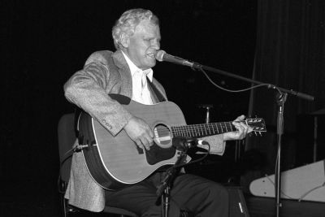

Origins of Folk
Folk is a traditional genre developed in the early 1900s, and made popular in the 60s. It is a relatively simplistic genre, consisting of vocals and guitar, and even a harmonica for playing certain traditionals. For this website, I will mainly be talking about folk and country's widespread use accumulating in and around the 60s.
